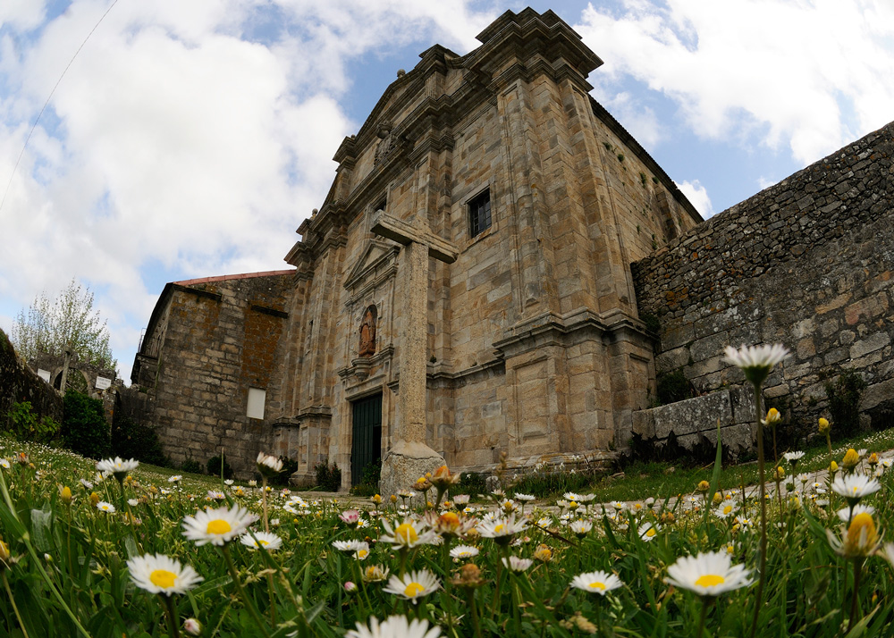
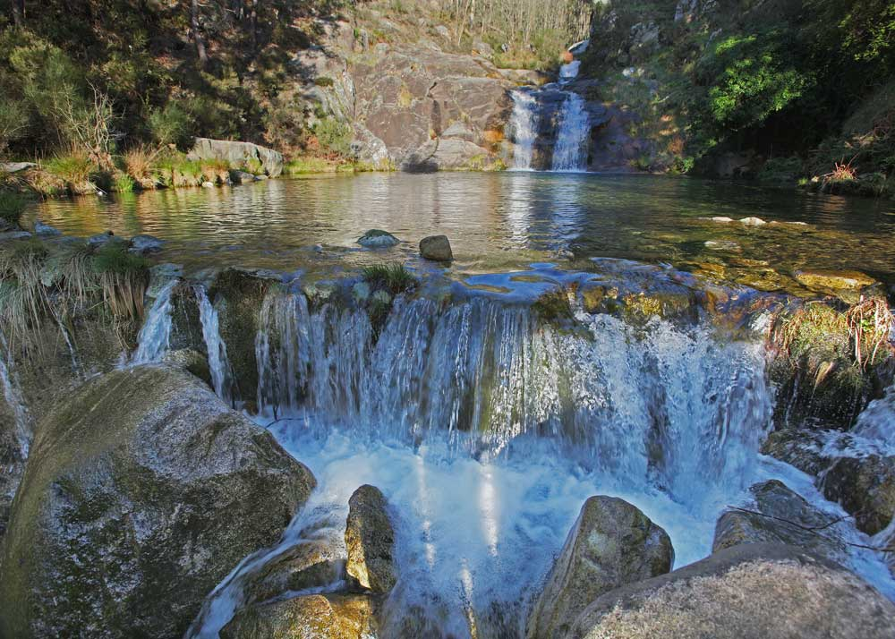
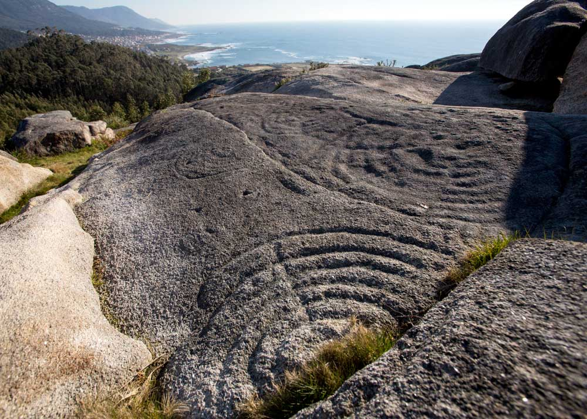
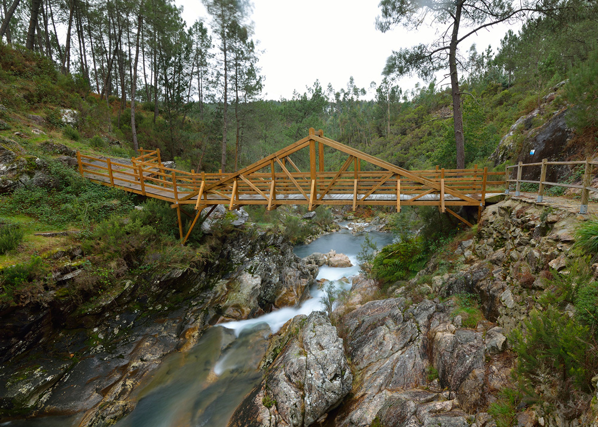
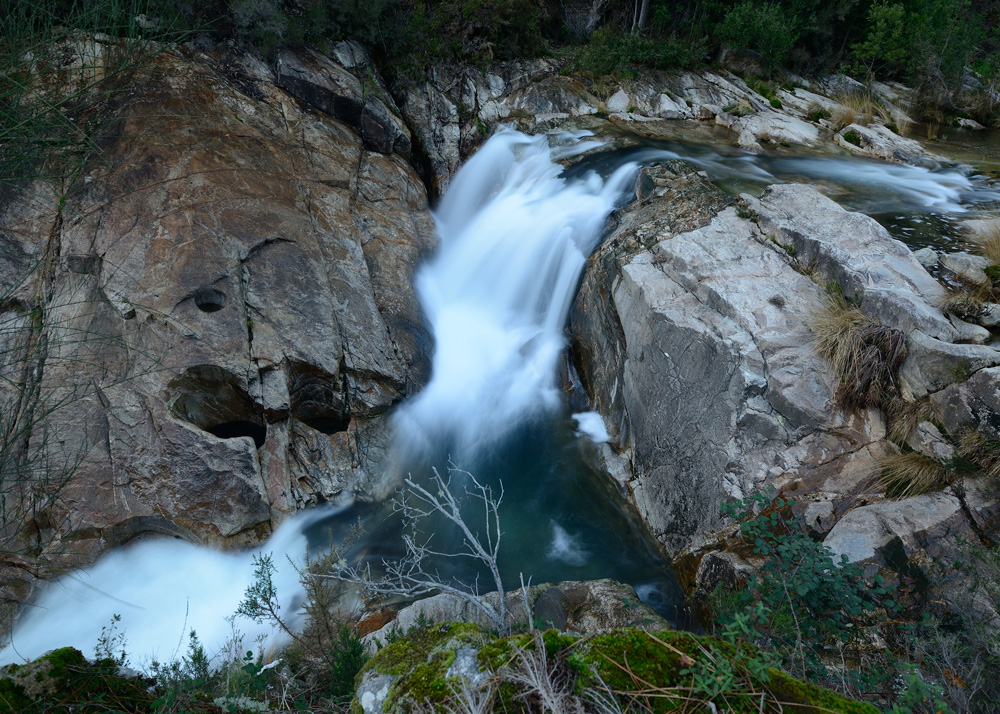

agoce.wordpress.com
Oia
|
|
||||||||

|  |
Monasterio de Santa María de OiaCategoría: Patrimonio religioso Localización: 42.00281276, -8.876398716 Antiguo monasterio de la órden del Císter, fundado en el siglo XII. La primera constancia documental del monasterio data del año 1137. A los monjes de esta antigua abadía se les atribuye la introducción de nuevas labores en la zona, entre ellas la cría de caballos en libertad y el tratamiento de enfermedades mediante el uso de plantas medicinales, para lo que contaban con una botica y un huerto. Desde el punto de vista arquitectónico destaca el carácter medieval del conjunto, en sintonía con la austeridad que predicaban los monjes del Císter, así como su cercanía al mar. Fue declarado Bien de Interés Cultural en 1931. En la actualidad el monasterio es de titularidad privada y existe un proyecto para convertirlo en un complejo hotelero y de talasoterapia. |
|  |
Pozas de MougásCategoría: Patrimonio natural Localización: 42.0605833, -8.8621 En la geografía de Oia existen multitud de valles regados por pequeños rios y arroyos. El rio Peito, en la falda oeste de la Sierra da Groba, posee multitud de pequeñas cascadas y pozas. Entre las más conocidas del municipio destacan por su tamaño y belleza las llamadas Pozas de Mougas. Son un destino habitual en la época estival y componen un área recreativa fluvial con un gran atractivo. |
|  |
Castro y petroglifos de A CabeciñaCategoría: Patrimonio arquelógico Localización: 42.05981667, -8.884633333 Se trata de una de las estaciones arqueológicas más interesantes del litoral de Oia. Está formada por dos elementos de épocas diferentes: los petroglifos y el castro. En el acceso a la zona se puede contemplar una serie de afloramientos graníticos, y en ellos, a la izquierda, orientados al Atlántico, aparecen una serie de petroglifos de en torno a 4000 años de antigüedad. Del castro cabe destacar los restos conservados de lo que fue la muralla defensiva de la construcción. En la actualidad se llevan a cabo labores arqueológicas en la zona. |
|  |
El Pozo del ArcoCategoría: Patrimonio natural Localización: 42.00794172, -8.802555238 El Rio Tamuxe da lugar en esta zona a una serie de pozas naturales flanqueadas por molinos de agua recientemente restaurados, un paseo fluvial y un área recreativa. Una zona idónea para el descanso y el esparcimiento en contacto con la naturaleza. |
|  |
Pozas de LourezaCategoría: Patrimonio natural Localización: 41.99907158, -8.811735428 Siguiendo el curso del Tamuxe hasta la parroquia de Loureza, el rio genera pequeñas cascadas y pozas naturales que ofrecen al visitante un entorno incomparable para el baño y el descanso. Destaca la zona por su belleza natural y por las posibilidades de recreo que ofrece. |